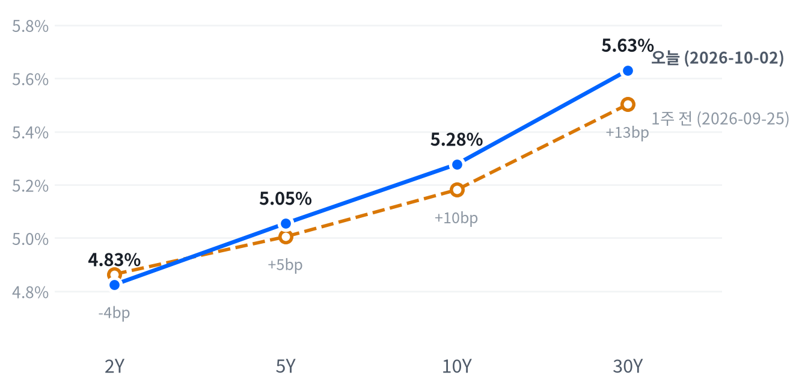

금요일 뉴욕 증시는 9월 고용 부진을 10월 인상이 빠지는 신호로 받아 기술주와 경기소비재 중심으로 올랐다. 국채금리는 발표 직후 내렸다가 되돌아서 전 만기가 오른 채 끝났다.
앞쪽 금리가 고용보다 물가에 반응하는 국면으로 넘어갔다고 판단한다. 10월 14일 9월 CPI에 2년물이 어떻게 반응하는지가 이 판단을 시험한다.
9월 고용이 크게 빗나갔는데 국채 앞쪽은 반대로 갔다. BLS 비농업 고용은 2.9만 명으로 컨센서스의 절반에도 못 미쳤고 7·8월 수치도 함께 깎였다. 그런데 2년물 금리는 발표 직후 내렸다가 되돌아서 3.8bp 오른 채 끝났다. 주식은 같은 숫자를 10월 인상이 빠지는 재료로 읽었고, 기술주와 테슬라가 지수를 끌어올렸다.
시장은 10월 인상만 지우고 12월 인상은 남겼다. CNBC가 전한 CME FedWatch 기준으로 10월 회의 동결 확률은 77%였다. 12월 인상 확률은 여전히 75%를 넘었다. 우리는 여기서 한 걸음 더 나가 실업률이 3월 이후 좁은 범위에 머무는 동안 앞쪽 금리를 움직이는 정보가 고용에서 물가로 옮겨 갔다고 본다. 다른 설명도 남아 있다. 같은 날 프랑스 10년물 금리가 24년 만의 최고로 올랐다는 CNBC 보도처럼 유럽 재정 우려가 앞쪽까지 끌어올렸을 수 있다. 발표 전에 쌓인 포지션이 정리됐을 수도 있다. 하루치 종가로는 이 셋을 가르지 못한다.
새 거래 아이디어는 내지 않고 앞쪽 금리의 이벤트 위험을 10월 14일 9월 CPI까지 지켜볼 과제로 둔다. 우리 해석이 맞다면 CPI 서프라이즈에는 2년물과 12월물 연방기금 선물이 이번 고용 때보다 크게 서프라이즈 방향으로 반응해야 한다. 표현 수단은 2년물 국채나 12월물 연방기금·SOFR 선물이지만 선물 가격과 캐리·롤 비용 자료가 없어 비용과 손익 구조를 평가할 수 없다. 주식은 지수가 높은 자리에서 하루 범위 중간에 끝났다. 상승의 3분의 2를 두 업종이 만들어 지수 방향에 새 판단을 걸 근거가 약하다. 스토리지 급락은 도시바 증설이라는 업종 재료라 지수 판단과 따로 본다.
10월 14일 근원 CPI가 컨센서스와 뚜렷이 갈렸는데도 2년물이 그 방향으로 3.8bp 넘게 움직이지 않거나 반대로 가면 앞쪽이 물가를 따른다는 해석을 거둔다. 같은 날 독일·프랑스 장기물이 크게 움직이면 유럽 요인과 섞여 판단을 미룬다. 그 전에 10월 6~8일 3년물·10년물·30년물 입찰 수요가 약하고 앞쪽 금리까지 함께 오르면 수급 쪽 설명에 무게를 옮긴다.
| 지수 | 종가 | 등락률 | 기준일 |
|---|---|---|---|
| 닛케이225 | 68,309.46 | -0.94% | 10월 2일 |
| 항셍 | 23,972.29 | -2.60% | 10월 2일 |
| 상해종합 | 3,842.20 | +0.31% | 9월 30일 |
| DAX | 25,231.20 | +1.17% | 10월 2일 |
| FTSE100 | 10,462.00 | +0.32% | 10월 2일 |
| 유로스톡스50 | 6,238.50 | +1.02% | 10월 2일 |
| VIX | 15.31 | -6.59% | 10월 2일 |
상해종합은 확보된 가장 최근 마감인 9월 30일 기준이다.
아시아는 미국과 엇갈렸다. 닛케이가 0.94%, 항셍이 2.60% 내렸지만 상해종합은 9월 30일 마감에서 0.31% 올라 있어 지역 안에서도 갈렸다. 유럽은 세 지수가 모두 올라 미국 장과 같은 쪽에 섰다. DAX와 유로스톡스50이 1% 넘게 올랐다. VIX는 15.31로 내려 지난 두 해 가운데 낮은 쪽 18% 안으로 들어왔다.
야간 선물은 고용 발표 직후에 고점을 찍었다. S&P 선물(ES)은 전날 저녁 7,723에서 출발해 고용보고서가 나온 직후인 09:00(ET) 7,803까지 올랐다. 나스닥100 선물(NQ)도 같은 시각이 고점이었다. 하루 폭은 1.5%였다. 선물은 약한 고용을 먼저 금리 하락 재료로 받았다. 현물은 S&P +0.78%, 나스닥 +1.28%, 러셀2000 +0.66% 갭으로 올라 출발했다.
세 지수 모두 하루 범위의 중간쯤에서 끝났다. 높게 열린 뒤 개장 첫 시간 안에 고점과 저점을 모두 찍었다. 오후에는 그 사이를 오갔다.
고점권·저점권 경계는 최근 2,259거래일의 일간 종가 위치 이력으로 다시 잰 기준이다.
고용과 국채금리가 하루를 움직였다. 약한 고용에 금리가 내려간 오전 초반에 지수가 고점을 찍었고, CNBC와 investingLive가 전한 대로 금리가 되돌아 오르자 지수도 갭 상승분 일부를 내줬다. 금리가 언제 반전했는지 밝힌 출처가 없어 두 움직임의 선후는 확인되지 않았다. 지수 안에서는 테슬라의 3분기 인도 호조가 경기소비재를 올렸고, 도시바의 HDD 증설 보도가 스토리지 종목을 끌어내렸다.
주식과 금리는 최근 60거래일 동안 느슨하게 반대로 움직여 왔다(상관계수 -0.40, 직전 60거래일 -0.568).
| 지수 | 종가 | 등락률 |
|---|---|---|
| 나스닥 | 27,190.86 | +1.19% |
| S&P500 성장주 | 143.91 | +0.97% |
| 러셀2000 | 2,832.89 | +0.94% |
| S&P500 | 7,722.72 | +0.73% |
| 다우존스 | 51,176.96 | +0.49% |
| S&P500 가치주 | 229.62 | +0.44% |
| 섹터 | 등락률 |
|---|---|
| 경기소비재 | +1.13% |
| 기술 | +1.01% |
| 산업재 | +0.78% |
| 소재 | +0.66% |
| 유틸리티 | +0.38% |
| 커뮤니케이션서비스 | +0.35% |
| 부동산 | +0.32% |
| 필수소비재 | +0.25% |
| 에너지 | +0.19% |
| 금융 | +0.06% |
| 헬스케어 | -0.01% |
나스닥은 27,191로 올라 최근 2년(504거래일) 가운데 이보다 높았던 날이 하루뿐인 자리에 섰다. S&P500은 7,723으로 이보다 높았던 날이 14일뿐이다. 이 높이는 기술 한 업종이 만들었다. 지난 한 달 기술 섹터가 8.96% 오르는 동안 나머지 열 개 업종은 모두 내렸다. 오늘 움직임은 평소 하루 폭과 비슷한 보통 크기였다.
S&P는 7,726에 열어 7,755까지 오른 뒤 11:00(ET) 7,701로 밀렸고, 오후에는 시가 부근으로 돌아와 끝났다. 금리가 되돌아선 시간대에 갭 상승분 일부가 빠졌지만 시가 아래로 크게 내려가지는 않았다. 러셀2000은 시가가 그날의 저점이었고, 한때 0.97% 더 올라 세 지수 가운데 가장 끈질겼다. 엔비디아는 오전 238달러 근처에서 고점을 찍고 밀려 시가보다 낮게 끝났다.
지수 상승은 두 업종이 만들었다. S&P500 상승 0.73% 가운데 기술이 +0.34%포인트, 경기소비재가 +0.15%포인트를 보태 둘이 3분의 2가량을 냈다. 커뮤니케이션서비스와 산업재는 각각 +0.04%포인트에 그쳤다. 헬스케어는 거의 기여하지 않았다. 섹터로 설명되지 않는 부분은 +0.12%포인트다. 경기소비재 몫의 상당 부분은 테슬라 한 종목의 인도 호조에서 나왔다.
섹터 기여는 최근 252거래일 회귀로 추정했고 설명력은 0.976이다. 소재·부동산은 추정에서 식별되지 않아 뺐다.
이 상승은 금리 하락의 덕을 보지 않았다. 10년물 금리가 오른 날 성장주가 가치주보다 두 배 넘게 올랐고(성장주 +0.97%, 가치주 +0.44%), 금리에 민감한 금융·부동산·유틸리티도 내리지 않았다. 주식은 고용 부진을 할인율이 아니라 10월 인상이 빠지는 일정 문제로 받았다고 본다. 마감이 하루 범위 중간이라 이 해석이 다음 세션까지 이어질지는 알 수 없다. Investing.com은 같은 날 S&P 등락주선이 나빠지는 등 지수 아래의 힘이 약해지고 있다고 짚었다.
| 만기 | 종가 | 전일比(bp) | 1주 전 | 주간 변화(bp) |
|---|---|---|---|---|
| 2Y | 4.825% | +3.8 | 4.864% | -3.9 |
| 5Y | 5.055% | +5.0 | 5.005% | +5.0 |
| 10Y | 5.277% | +4.3 | 5.181% | +9.6 |
| 30Y | 5.630% | +2.7 | 5.502% | +12.8 |
네이버 국채 종가 기준(2026-10-02, 전 만기 동일 기준일). 1주 전은 9월 25일.

1주 전(9월 25일)보다 2년물은 내리고 10년물·30년물은 올라 커브가 가팔라졌다. 장기물 상승이 이끈 베어 스티프닝이다.
10년물은 5.277%, 30년물은 5.630%로 올라 둘 다 최근 2년(504거래일) 가운데 이보다 높았던 날이 하루뿐인 자리에 섰다. 전날 잠시 물러났던 장기물이 하루 만에 다시 고점권으로 돌아온 셈이다. 오늘 움직임 자체는 평소 하루 폭 안쪽의 보통 크기였다. 한 주로 보면 10년물이 9.6bp, 30년물이 12.8bp 올랐다.
하루로는 5년물을 중심으로 전 구간이 올랐다. 5년물이 가장 많이 올랐고 30년물이 가장 덜 올랐다. 2s10s는 45.2bp로 거의 그대로였고 5s30s는 57.5bp로 2.3bp 좁혀졌다. 한 주로 보면 그림이 다르다. 2년물은 내리고 장기물이 올라 2s10s가 9월 25일 31.7bp에서 13.5bp 벌어졌다. 이번 주 커브를 가파르게 만든 것은 장기물이다. 오늘은 그 위에 고용이 앞쪽과 중간 구간을 함께 밀어 올렸다.
고용 미스에 금리가 오른 이유는 확인되지 않았다. CNBC는 발표 직후 10년물이 급락했다가 반전해 오른 채 끝났다고 전했고, investingLive는 금리가 목요일 수준보다 높게 끝났다고 썼다. 반전의 계기가 된 발언이나 입찰은 보도되지 않았다. 기대인플레는 설명이 되지 못한다. 10년 기대인플레는 10월 2일 2.36%로 움직이지 않았고 5년은 1bp 올랐을 뿐이다. 명목금리 상승이 실질금리 쪽에서 나왔을 가능성이 크지만, 같은 날짜로 맞춘 최신 분해는 10월 1일 기준이다. 그날 10년물 5bp 하락은 전부 실질금리 몫이었고, 한 주 6bp 상승은 실질금리와 기대인플레가 3bp씩 나눴다. 10월 2일 실질금리가 갱신되면 오늘 상승의 내역이 갈린다.
같은 날 유럽 쪽에 재료가 있었다. CNBC는 프랑스 10년물 금리가 4.914%로 24년 만의 최고를 기록했다고 전했다. ING는 이탈리아·그리스 스프레드가 벌어지는 재정 우려를 짚었다. 하루 전 ISM 제조업 가격지불지수는 77.9로 6.8포인트 뛰었다. 둘 다 오늘 미국 금리 반전과 시각을 맞춰 확인하지는 못했다. 신용 스프레드는 10월 1일까지 넓어지는 쪽이었다. 하이일드는 3.24%포인트로 한 주 44bp 벌어졌다. 투자등급은 0.86%포인트다. 10월 1일 4주물 입찰은 응찰배율 2.83배, 간접 낙찰 56.1%로 무난했다. 10년 기간프리미엄은 9월 25일 기준 1.02%포인트가 최신이다.
5년 뒤 5년 명목금리는 10월 1일 기준 5.47%로 하루 2bp 내렸다. 실질 기준으로는 3.11%다. 기대인플레 지표와의 교차검증은 이번에 할 수 없었다. 위험 프리미엄이 섞인 값이라 시장이 먼 구간 금리를 이 수준에서 거래한다는 정도로 읽는다.
| 통화쌍 | 종가 | 등락률 |
|---|---|---|
| DXY | 101.92 | -0.17% |
| USD/KRW | 1,342.51 | -1.06% |
| USD/JPY | 157.93 | +0.23% |
| EUR/USD | 1.1257 | -0.62% |
원화가 이날 FX에서 가장 크게 움직였다. 원/달러는 1,343원으로 1.06% 내려 지난 두 해 가운데 이보다 낮았던 날이 이틀뿐인 원화 강세 자리까지 왔다. 하루 움직임은 평소의 1.6배였다. 달러지수는 101.92로 소폭 내렸고 레벨은 한가운데쯤이다. 엔/달러는 거의 움직이지 않았다.
원/달러 하루 움직임은 최근 60거래일 평균 하루 폭의 1.64배다.
원화 강세는 미국 쪽 재료로 설명되지 않는다. 미국 2년물 금리가 오른 날이라 금리차는 원화에 불리했고, 엔은 달러에 약해졌으며(엔/달러 +0.23%) 유로/달러도 0.62% 내렸다. 달러 전반이 약했다면 유로와 엔도 함께 강해졌어야 한다. 원화 쪽 고유 재료는 이번에 확인하지 못했다. 다음 서울 거래일에 원화가 이 자리를 지키는지가 일회성 수급인지 추세인지를 가른다.
달러 방향은 금리차로 읽히지 않는다. 달러지수는 0.17% 내렸는데 유로와 엔은 모두 달러에 약해, 종가 집계 시각이 다른 시세끼리 방향이 엇갈렸다. 엔/달러는 13:30(ET) 156.93엔까지 내려 고용 뒤 엔 강세가 가장 깊었다가 장 막판 157.8엔대로 돌아왔다. 미국 금리가 장중 되돌린 흐름과 방향은 맞는다. 고용 뒤 달러가 어디로 가는지는 금리 장중 경로 없이 종가만으로 판단하기 어려워 다음 주 입찰과 CPI 전후 2년물과 달러지수가 같은 방향으로 움직이는지를 본다.
주식과 달러의 최근 60거래일 상관계수 -0.313(직전 60거래일 -0.527).
| 품목 | 종가 | 등락률 |
|---|---|---|
| WTI | $91.26 | -1.73% |
| Brent | $102.70 | +0.38% |
| 천연가스 | $3.039 | +2.43% |
| 금 | $4,172.10 | -0.72% |
WTI는 장중에 훨씬 크게 흔들렸다. 종가는 91.26달러로 1.73% 내려 평소 하루 폭 안쪽이었지만 09:00(ET)에는 88.06달러까지 시가보다 4.88% 밀렸다가 대부분 되찾았다. 레벨은 최근 2년(504거래일) 가운데 높은 쪽 15% 안이라 중동 위험이 붙은 높은 자리를 지키고 있다.
유가 재료는 양쪽으로 갈렸다. CNBC는 미국이 세 번째 항모전단을 중동에 보내고 트럼프가 11월 이란 공습 재개를 계획한다고 보도했다. 같은 매체는 G7이 디젤 공급난에 대응해 비축유 1억 배럴을 넉 달에 걸쳐 방출하기로 합의했다고 전했다. 비축유 기사는 미국 동부 기준 15시가 넘어 나와 오전 저점보다 늦어, 09:00 급락의 계기는 확인되지 않았다. 브렌트는 102.70달러로 0.38% 올라 WTI와 방향이 갈렸고, 두 유종의 차이는 11.44달러다. 서로 다른 월물을 견준 값이라 하루 변화로 의미를 두기는 어렵다. 천연가스는 2.43% 올랐고 확인된 재료는 없다.
금은 4,172달러로 0.72% 내려 같은 기간의 한가운데쯤에 있다. 고용보고서가 나온 08:30(ET)에 4,259달러로 고점을 찍은 뒤 밀려 오전 늦게 저점을 찍었다. 발표 직후 금리가 내린 구간에 오르고 금리가 되돌아선 뒤 밀린 모양이라 금과 금리가 최근 60거래일 느슨하게 반대로 움직여 온 관계 안에 있다. 10년 실질금리는 10월 1일 기준이 최신이라 오늘 금 하락을 실질금리로 확인하지는 못한다.
금과 금리의 최근 60거래일 상관계수 -0.31(직전 60거래일 -0.326).
미국 경기 국면은 골디락스를 사흘째 이어 간다. 9월 고용상황과 8월 내구재 주문 확정치가 새로 나왔지만 9월 30일 국면을 옮긴 뒤 5영업일이 지나지 않아 좌표를 다시 움직일 수 없다. 숫자도 이동을 요구하지 않는다. 성장 점수(-0.062)는 고용 미스를 반영하고도 보합 안쪽에 머물렀다. 물가 점수(-0.869)는 둔화 쪽이다.
고용 서프라이즈는 컸지만 실업률이 3월 이후 범위 안에 있어 성장 좌표를 둔화로 끌어내릴 크기는 아니라고 본다. 성장 좌표를 다시 시험하는 것은 11월 6일 10월 고용이고, 물가 좌표는 10월 14일 9월 CPI가 시험한다.
고용축은 일곱 지표 가운데 넷이 개선이라 개선으로 남았지만 세기는 미미하다. 개선을 받치는 것은 실업수당 청구다. 계속 청구가 1,701,000건으로 4주 평균이 뚜렷이 내려왔고, 신규 청구(197,000건)도 완만하게 개선됐다. 실업률은 4.2%로 한 달 새 올랐지만 석 달 평균으로는 앞 석 달보다 낮다. 오늘 나온 비농업 고용과 시간당 임금, 그리고 구인건수는 모두 악화 쪽이라 축 안에서 청구와 갈린다. 고용축 +0.421
| 지표 | Actual | Forecast | Previous | 발표일 | 컨센 대비 | 직전 대비 | 추세 |
|---|---|---|---|---|---|---|---|
| 비농업 고용 변화(9월) | +29K | +84K | +133K | 2026-10-02 | 하회▼ | 악화 | 악화(미미) · 3개월 평균 +81K → +51K |
| 실업률(9월) | 4.2% | 4.1% | 4.1% | 2026-10-02 | 상회▲ | 악화 | 개선(미미) · 3개월 평균 4.27% → 4.13% |
| 평균시간당임금 MoM(9월) | +0.13% | +0.3% | +0.32% | 2026-10-02 | 하회▼ | 악화 | 악화(미미) · 3개월 평균 +0.21% → +0.19% |
| 구인건수(8월) | 7,079K | — | 7,335K | 2026-08 기준월 | 악화 | 악화(미미) · 3개월 평균 7,336K → 7,199K | |
| 신규 실업수당 청구 | 197,000 | — | 198,000 | 9월 26일 주간 | 개선 | 개선(완만) · 4주 평균 208K → 200K | |
| 신규 청구 4주 평균 | 200,000 | — | 202,500 | 9월 26일 주간 | 개선 | 보합 · 4주 평균 204K → 203K | |
| 계속 실업수당 청구 | 1,701,000 | — | 1,712,000 | 9월 19일 주간 | 개선 | 개선(뚜렷) · 4주 평균 1,781K → 1,724K | |
| ADP 민간고용(9월) | +9.0만 | +6.8만 | +3.6만 | 2026-09-30 | 상회▲ | — | — |
| ISM 제조업 고용(9월) | 52.7 | — | 51.2 | 2026-10-01 | — | — |
BLS에 따르면 9월 비농업 고용은 2.9만 명 늘어 다우존스 컨센서스(+8.4만)를 크게 밑돌았다. 실업률은 4.2%로 예상(4.1%)보다 높았고, 시간당 임금은 0.1% 올라 예상(0.3%)에 못 미쳤다. 임금은 전년비로 3.0%다.
헤드라인보다 수정이 더 약했다. BLS는 7월을 +2.1만에서 -1.0만으로, 8월을 +16.2만에서 +13.3만으로 낮춰 두 달 합계가 6만 명 줄었다고 밝혔다. 7월은 감소로 바뀌었다. 구성으로는 민간 고용이 4.6만 명 늘었고 정부 고용이 1.7만 명 줄었다. 헬스케어는 1.7만 명 늘어 12개월 평균(3.3만)보다 느려졌고, 금융활동은 7천 명 줄었다. 반대 방향의 숫자도 있다. 경제활동참가율이 61.6%에서 61.8%로 올랐다. U-6 실업률은 7.7%에서 7.6%로 내렸다.
완만한 둔화에 임금 압력 완화가 겹친 구성이라고 본다. BLS는 실업률이 3월 이후 4.1~4.3%의 좁은 범위에 머물렀다고 적었다. 참가율이 오른 만큼 실업률 상승의 일부는 구직자가 늘어난 쪽에서 나왔을 여지가 있다. 급랭 신호가 아니라서 국면을 옮길 근거는 되지 못한다. 정책 경로에서는 10월 인상을 지우는 쪽으로 밀었고, 12월 인상을 지울 만큼은 아니었다.
생산·활동축은 보합이다. 다섯 지표 가운데 개선은 신규주택 판매(684K) 하나뿐이다. 내구재 주문이 8월 -0.07%로 완만한 악화를 보였고, 기존주택 판매(398만 건)도 줄었다. 9월 ISM 제조업 PMI는 54.5로 예상을 조금 밑돌았지만 확장 영역에 남아 축 판정과 결이 다르다. 생산·활동축 -0.188
| 지표 | Actual | Forecast | Previous | 발표일 | 컨센 대비 | 직전 대비 | 추세 |
|---|---|---|---|---|---|---|---|
| 내구재주문 MoM(8월) | -0.07% | — | +0.87% | 2026-10-02(확정치) | 악화 | 악화(완만) · 3개월 평균 +1.95% → +0.46% | |
| 산업생산 MoM(8월) | +0.02% | — | +0.20% | 2026-08 기준월 | 악화 | 보합 · 3개월 평균 +0.24% → +0.14% | |
| 신규주택판매(8월) | 684K | — | 643K | 2026-08 기준월 | 개선 | 개선(미미) · 3개월 평균 645K → 666K | |
| 기존주택판매(8월) | 398만 | — | 406만 | 2026-08 기준월 | 악화 | 악화(미미) · 3개월 평균 4,080K → 4,057K | |
| 실질GDP QoQ 연율(2분기) | +2.2% | — | +2.5% | 2026년 2분기 기준 | 악화 | — | |
| ISM 제조업 PMI(9월) | 54.5 | 55.0 | 54.6 | 2026-10-01 | 하회▼ | — | — |
| 공장주문(8월) | +0.1% | — | +0.8% | 2026-10-02 | — | — |
8월 내구재 주문은 확정치 기준 -0.07%로 7월(+0.87%)보다 약하다. MDM이 전한 Census 확정 보고서로는 속보의 보합에서 -0.1%로 낮아졌고, 운송 제외 주문은 0.2% 늘었다.
약세는 항공기가 만들었다. Census는 9월 25일 속보에서 운송장비가 0.6% 줄어 감소를 이끌었다고 밝혔고, 비국방 항공기 주문은 4.3% 줄었다. 반면 핵심 자본재 주문은 1.6% 늘었고, 미충족 주문은 26개월 가운데 25번째로 늘었다. 확정 보고서의 세부 구성은 원문을 확보하지 못해 운송 제외 수치 하나만 바뀐 것을 확인했다.
설비투자 수요가 꺾였다는 신호는 아니라고 본다. 생산·활동축의 보합 판정을 바꾸지 않는다. 오늘 시장을 움직인 재료도 아니었다.
소비축은 악화다. 소매판매가 8월에 1.13% 반등했지만 석 달 평균으로는 앞 석 달보다 뚜렷이 낮다. 미시간대 소비자심리(51.7)는 석 달 평균으로 개선 쪽이라 두 지표가 갈린다. 9월 콘퍼런스보드 소비자신뢰는 81.9로 예상을 크게 밑돌았다. 소비축 -0.419
| 지표 | Actual | Forecast | Previous | 발표일 | 컨센 대비 | 직전 대비 | 추세 |
|---|---|---|---|---|---|---|---|
| 소매판매 MoM(8월) | +1.13% | — | -0.46% | 2026-08 기준월 | 개선 | 악화(뚜렷) · 3개월 평균 +1.09% → +0.29% | |
| 미시간대 소비자심리(8월) | 51.7 | — | 55.2 | 2026-08 기준월 | 악화 | 개선(미미) · 3개월 평균 49.3 → 52.1 | |
| 콘퍼런스보드 소비자신뢰(9월) | 81.9 | 89 | — | 2026-09-29 | 하회▼ | — | — |
물가축은 둔화다. 여덟 지표 가운데 다시 가속하는 것이 없다. 소비자물가 전월비(8월 0.4%)와 생산자물가(0.4%)는 석 달 평균이 크게 내려와 뚜렷한 둔화이고, 근원 소비자물가 전월비(0.29%)는 완만한 둔화다. 상충하는 숫자는 9월 ISM 제조업 가격지불지수(77.9)다. 공식 물가에 아직 닿지 않은 상류 압력이라 9월 CPI에서 확인해야 한다. 물가축 -0.869
| 지표 | Actual | Forecast | Previous | 발표일 | 컨센 대비 | 직전 대비 | 추세 |
|---|---|---|---|---|---|---|---|
| CPI YoY(8월) | 3.71% | — | 3.54% | 2026-08 기준월 | 상승 | 교착 · 3개월 평균 3.85% → 3.66% | |
| CPI MoM(8월) | +0.40% | — | +0.07% | 2026-08 기준월 | 상승 | 둔화(뚜렷) · 3개월 평균 +0.66% → +0.02% | |
| Core CPI YoY(8월) | 2.76% | — | 2.79% | 2026-08 기준월 | 하락 | 교착 · 3개월 평균 2.87% → 2.79% | |
| Core CPI MoM(8월) | +0.29% | — | +0.22% | 2026-08 기준월 | 상승 | 둔화(완만) · 3개월 평균 +0.26% → +0.16% | |
| PPI 최종수요 MoM(8월) | +0.40% | — | +0.07% | 2026-08 기준월 | 상승 | 둔화(뚜렷) · 3개월 평균 +0.79% → +0.12% | |
| PCE 물가 YoY(8월) | 3.42% | — | 3.36% | 2026-08 기준월 | 상승 | 둔화(미미) · 3개월 평균 3.59% → 3.41% | |
| Core PCE YoY(8월) | 3.01% | — | 2.98% | 2026-08 기준월 | 상승 | 둔화(미미) · 3개월 평균 3.12% → 3.01% | |
| 미시간대 1년 기대인플레(8월) | 4.0% | — | 4.2% | 2026-08 기준월 | 하락 | 교착 · 3개월 평균 4.43% → 4.27% | |
| ISM 제조업 가격지불(9월) | 77.9 | — | 71.1 | 2026-10-01 | — | — |
직전 대비는 Actual을 Previous와 비교한 것이고, 추세는 최근 3개월 평균을 그 앞 3개월 평균과 비교한 것입니다(주간 실업수당 청구는 4주 평균끼리). 추세의 세기는 그 지표가 평소 움직이는 폭에 견준 크기이고, 작은 변화는 보합으로 봅니다. 분기 지표인 GDP는 두 비교가 같은 숫자를 보므로 직전 대비만 싣습니다.
연준의 다음 수는 12월 9일 FOMC의 25bp 인상이라는 판단을 유지한다. 오늘 고용은 이 판단을 다시 보게 하는 두 조건 가운데 하나(컨센서스를 크게 밑도는 고용)를 채웠지만 실업률이 4.2%에 머물러 나머지 하나는 채우지 않았다. CNBC가 전한 CME FedWatch 기준으로 10월 회의 동결 확률은 77%, 25bp 인상은 17%였다. 12월 인상 확률은 75%를 넘었다. Reuters는 10월 인상 확률이 고용 전 4분의 1을 넘던 데서 5분의 1 미만으로 내려왔고, 12월은 베팅이 다소 줄었어도 약 90%라고 전했다. 두 집계는 관측 시각과 정의가 달라 출처별로만 견줄 수 있다.
시장은 10월만 지우고 12월을 남겼다. 2년물이 고용 미스에도 올라 끝난 것도 같은 그림이다. Reuters는 연준 위원들이 10월 연속 인상에 기울지 않는 분위기이고 이번 고용이 그 접근을 유지시킨다고 전했다. 다음 분기점은 10월 14일 9월 CPI다.
10월 14일 9월 CPI가 컨센서스를 뚜렷이 밑돌아 보도된 12월 인상 확률이 과반 아래로 내려가거나, 11월 6일 10월 고용에서 실업률이 3월 이후 범위(4.1~4.3%) 위로 올라서면 인상 우위 판단을 거둔다. 반대로 CPI가 뚜렷이 웃돌아 보도된 10월 인상 확률이 다시 과반으로 오르면 시점을 10월 쪽으로 당긴다.
물가 둔화가 이어지면 실질금리가 정점을 지나고, 장기물 총수익과 금의 보유비용이 함께 좋아진다는 경로다. 이 경로는 아직 가격에 닿지 않았다. 장기물은 연준 경로보다 기간프리미엄과 유럽 재정 재료에 끌려 올랐다. 오늘 고용 미스도 장기 금리를 내리지 못했다. 근원 PCE 전년비가 3.0% 아래로 내려오거나 30년물이 5.05% 밑으로 내려오면 경로가 가격에 닿기 시작했다고 본다.
성장은 보합, 물가는 둔화라 이익 기대와 밸류에이션 부담이 맞선다. 고용 미스가 10월 인상을 지워 할인율 부담을 조금 덜었지만 12월 인상이 남아 있어 방향을 바꾸지는 못한다. 에너지는 지정학 재료가 공급을 조이는 쪽(항모 파견)과 푸는 쪽(G7 비축유 방출)으로 갈려 구조적 방향을 정하지 않는다. ISM 제조업 PMI가 50 위를 지키며 다시 오르거나 10년물이 4.5% 아래로 내려오면 주식 경로를 우호로 옮긴다.
물가 둔화가 이어지면 미국 실질금리의 우위가 줄며 달러가 약해진다는 경로다. 연준이 12월 인상을 남겨 둔 동안에는 미국 금리 우위가 이 경로에 맞선다. 달러지수가 20일 동안 3% 넘게 더 내리거나 보도된 FedWatch 인하 확률이 커지면 경로가 가격에 확인된다고 본다.
이 묶음은 매크로 국면과 따로 움직인다. 메모리는 데이터센터 투자가 D램·낸드 수급을 조이는 것이 경로라 우호를 유지한다. AI 인프라는 높은 장기금리가 캐펙스 사이클의 이점을 상쇄해 중립이다. 이번 스토리지 급락은 HDD 증설이라는 업종 공급 재료라 메모리 경로를 바꾸지 않는다. 30년물이 5.4% 위에 머무는 동안 AI 인프라가 버티는지와 하이퍼스케일러의 3분기 캐펙스 가이던스가 이 구분을 시험한다.
고용이 컨센서스를 크게 밑돌았는데 채권은 하루 끝에 반대로 갔다. CNBC와 investingLive는 발표 직후 금리가 내렸다가 되돌아 전날보다 높게 끝났다고 전했다. 주식은 같은 고용을 10월 인상이 빠지는 재료로 받아 나스닥이 1.19% 올랐다. 서프라이즈의 크기에 비해 채권 종가 반응이 작고 방향도 반대였던 것은, 시장이 이번 고용을 10월 시점의 문제로만 다뤘다는 뜻으로 본다.
경제지표 발표 일정은 공식 일정표로 확인하지 못해 BLS가 밝힌 날짜만 적었다.
스토리지가 하루 만에 10% 넘게 빠졌다(시게이트 -10.21%, 웨스턴디지털 -10.22%). Nikkei Asia는 도시바가 AI 데이터센터용 HDD 생산능력을 2027회계연도 안에 두 배로 늘리고, 약 600억 엔을 주로 필리핀 공장에 투자해 점유율을 10%대 초반에서 30%로 높일 계획이라고 보도했다. 과점 시장에 처음 나온 대형 증설이라 앞으로의 가격 가정을 흔드는 공급 뉴스로 본다. Invezz와 24/7 Wall St는 연초부터 크게 오른 뒤라 차익실현이 겹쳤다고 해석했다.
마이크론(-2.05%)은 확인된 재료가 없다.
반도체는 지수를 가장 크게 받친 업종이었다(엔비디아 +1.34%, 온세미 +6.01%). 온세미는 10월 1일 저녁 시냅틱스 인수 조건을 전액 주식 약 70억 달러에서 전액 현금 약 57억 달러(주당 123달러)로 바꿨고, Investing.com은 이것이 희석 우려를 걷어 냈다고 전했다. CNBC는 엔비디아가 고용 뒤 기술주 랠리에서 나스닥의 장중 기록을 이끌었다고 전했지만, 엔비디아 고유의 당일 재료는 확인되지 않았다.
테슬라(+4.65%)는 3분기 인도량이 486,532대로 컨센서스를 약 2.5만 대 웃돌았다고 CNBC가 전했다. 실적 발표는 10월 21일 장 마감 뒤다(Motley Fool).
코히런트(+5.59%)는 10월 1일 번스타인의 커버리지 개시와 광 플랫폼 PhotonLink 출시 뒤 이틀째 올랐다. Yahoo Finance는 이날 상승이 새 재료 없이 이어졌다고 전했다.
AI 인프라 다섯 종목의 최근 성과는 업종 흐름을 따라간 결과로 본다. 이 바스켓은 최근 20거래일 동안 S&P보다 16.93% 더 올랐고, 그 가운데 반도체 업종 몫이 20.10%포인트로 가장 컸다. 대형−소형 축은 -5.35%포인트를 깎았고 성장−가치 축은 +2.94%포인트를 보탰다. 세 축으로 설명되지 않는 몫은 -0.76%포인트로 작다.
초과 성과는 하루치 초과수익을 20거래일 합한 값이고, 최근 60거래일 기준 추정이다. 이 바스켓의 시장 베타는 2.95다.
9월 30일에 연 질문은 약한 PCE에도 2년물이 움직이지 않은 이유였다. 우리는 시장이 인상 시점만 12월로 옮겨 연말까지의 누적 경로를 지켰기 때문이라고 봤다. 시험 조건은 고용이 컨센서스와 뚜렷이 갈릴 때 2년물이 그 방향으로 크게 움직이면 지지, 제자리이거나 반대로 가면 약화였다. 오늘 고용은 뚜렷한 하방 서프라이즈였고 2년물은 반대로 올랐다. 조건대로 약화로 본다. Reuters가 전한 12월 인상 확률은 소폭 낮아져 앞쪽 금리와 반대 방향을 가리켰다. 종가도 2년물이 누적 경로를 따른다는 메커니즘을 지지하지 못했다. 왜 반대로 움직였는지는 이 질문이 답하지 못해 새 질문으로 넘긴다.
새로 확인할 것은 앞쪽 금리를 움직이는 정보가 고용에서 물가로 옮겨 갔는지다. 실업률이 3월 이후 좁은 범위에 있고 연준이 물가를 이유로 인상 국면에 있는 동안 고용 미스는 인상 시점만 미루고 평균 경로는 거의 바꾸지 못한다는 것이 우리 해석이다. 대안은 유럽 재정 우려가 기간프리미엄을 통해 앞쪽까지 올렸다는 설명과 발표 전 포지션 정리다. 10월 14일 근원 CPI가 컨센서스와 뚜렷이 갈릴 때 2년물 종가가 서프라이즈 방향으로 3.8bp 넘게 움직이면 지지, 그보다 작거나 반대면 약화로 본다. CPI가 컨센서스 부근이거나 같은 날 독일·프랑스 장기물이 크게 움직이면 판정을 미룬다.
장기물 질문(9월 29일)은 장기물 가격이 연준 경로·유가와 떨어져 기간프리미엄을 따르는지다. 오늘은 2년물과 30년물이 함께 오른 날이라 사전에 정한 대로 판정하지 않는다. 5s30s는 좁혀졌지만 약한 지표에 두 만기가 함께 내린 결과가 아니라 5년물이 더 오른 결과라 약화 조건의 모양과 다르다. 5s30s는 기준선 53.1bp 위에 있고 기간프리미엄 추정치는 9월 25일이 최신이다. 마감은 10월 9일 17:00 ET 종가다.
호르무즈 질문(9월 25일)은 중동 뉴스가 유가를 거쳐 FedWatch 10월 인상 확률과 2년물을 함께 움직이는지다. 사흘째 정책 기대는 에너지가 아니라 지표에 반응했다. 오늘 10월 인상 확률을 끌어내린 것은 고용이었다. 에너지 뉴스는 항모 파견과 비축유 방출로 갈렸다. 메커니즘은 약해졌다고 본다. 방향은 가리지 못한다. 브렌트 106달러 재반등을 요구한 반증 조건은 발동하지 않았다. 마감은 10월 9일 17:00 ET다.
디커플링 질문(9월 22일)은 인상 뒤 메모리·AI 인프라가 금리 민감 업종과 따로 움직이는지다. 오늘은 10년물이 오른 날이라 시험 조건의 절반이 섰다. AI 인프라 다섯 종목은 단순평균 +2.71%로 금리 상승에 둔감했다. 나머지 절반인 금리 민감 업종의 동반 약세는 없었다(금융 +0.06%, 유틸리티 +0.38%, 부동산 +0.32%). 스토리지 급락은 도시바 증설이라는 업종 재료라 금리 경로의 증거가 되지 못한다. 판정은 10월 28일 FOMC까지 미룬다.
10월 6~8일 3년물·10년물·30년물 입찰이 장기물 수급을 보여 준다. 10월 9일 장기물·호르무즈 두 질문을 마감한다. 10월 14일 CPI가 새 질문을 시험한다.
이 보고서의 시세는 Yahoo Finance와 네이버 국채 종가, 경제지표는 FRED와 각 발표 기관(BLS·BEA·Census 등), 그 밖의 내용은 본문에 밝힌 출처에서 가져왔다. 이 보고서는 투자 자문이 아니며 특정 자산의 매수·매도를 권유하지 않는다. 투자 판단과 그 결과에 대한 책임은 전적으로 투자자 본인에게 있다.